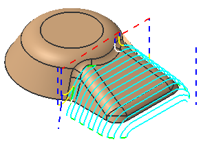

使用区域铣削驱动方法来沿曲面创建固定轴刀轨，区域铣削驱动方法将沿选定面创建驱动点，然后使用这些驱动点来跟随部件几何体，切削区域必须也包含在部件几何体中。

切削区域几何体可以通过选择下列对象来定义：
曲面区域
片体
面
未选择切削区域几何体时，所有部件几何体都将作为切削几何体，可以使用修剪边界来包含刀轨运动。
其它驱动参数包括：
陡峭范围
切削模式、以及切削角度控制
步距控制
通过有选择地切削陡峭区域，可以避免刀具沿竖直壁直接嵌入材料，并控制残余高度。